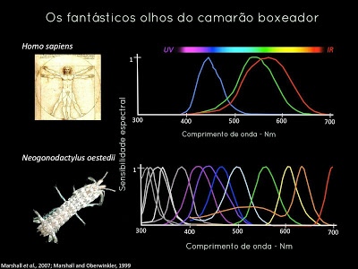
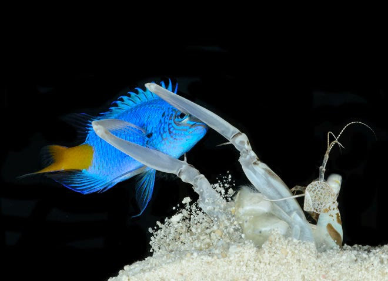

Fatos sobre o Stomatopoda
Seu nome científico é Odontodactylus scyllarus.
São animais exclusivamente carnívoros,
alimentando-se de camarões, caranguejos, moluscos, peixes
e até mesmo outros da mesma ordem.
O segundo par de patas, muito desenvolvido, é usado tanto
para atacar a presa como para se defender.
Sua classificação científica:
| Reino |
Filo |
Subfilo |
Classe |
Subclasse |
Ordem |
| Animalia |
Arthropoda |
Crustacea |
Malacostraca |
Hoplocarida |
Stomatopoda |
Fatos interessantes:
Possuem olhos incríveis!

Eles contam três pontos focais cada e são capazes de enxergar
do espectro ultravioleta ao infravermelho. Para que você tenha
uma ideia, o olho humano contém milhões de células fotorreceptoras,
entre elas os cones, que são as que nos permitem ver as cores e as Stomatopoda
são capazes de enxergar cores que nosso cérebro humano é incapaz de processar.
Sanguinários!

Apesar de não serem muito grandes — entre 15 e 30 centímetros —
são consideradas como um dos mais violentos do planeta.
Elas possuem duas patas superpoderosas na parte dianteira que,
quando acionadas, são capazes de proferir um golpe com a mesma
aceleração de um disparo uma arma do calibre 22 e força de
impacto de 60 kg/cm3!
Muito velozes!

Essas patinhas se movem tão depressa que
aágua próxima a elas chega a ferver
em um fenômeno chamado supercavitação.